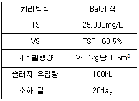
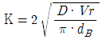
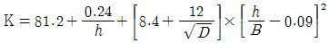
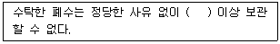

수질환경산업기사 (2017-08-26 기출문제)
1과목: 수질오염개론
1. 적조현상의 주 원인이 되는 조류를 제거하기 위한 방법으로 황산동을 주입하는 화학적인 방법을 사용하기도 한다. 알칼리도가 40ppm 이하일 경우에 주입되는 황산동의 농도로 가장 적절한 것은?
- 5 ~ 10ppb
- 10 ~ 20ppb
- 0.⑤ ~ 0.1ppm
- 0.2 ~ 0.5ppm
(정답률: 57%)

2. 해수의 담수화에 관한 설명으로 옳지 않은 것은?
- 단물은 1,000mg/L 이하의 염을 포함한다.
- 역삼투법은 반투막과 정수압을 이용하여 순수한 물을 분리하는 방법이다.
- 해수는 대략 35,000mg/L의 염을 포함한다.
- 증발법은 가장 오래된 담수화방법으로 에너지가 많이 소모되며 해수 염의 농도에 따라 열 및 동력요구량이 크게 달라진다.
(정답률: 70%)
3. 균류(Fungi)의 경험적인 분자식으로 가장 적절한 것은?
- C6H9O5N
- C7H12O5N
- C9H14O6N
- C10H17O6N
(정답률: 78%)
4. 0.1N CH3COOH 100mL를 NaOH로 적정하고자 하여 0.1N NaOH 96mL를 가했을 때, 이 용액의 pH는? (단, CH3COOH의 해리상수 Ka=1.8×10-5)(오류 신고가 접수된 문제입니다. 반드시 정답과 해설을 확인하시기 바랍니다.)
- 1.9
- 3.7
- 4.7
- 5.7
(정답률: 47%)
5. Bacteria의 약 80%는 H2O이고, 약 20%가 고형물로 구성되어 있다. 이 고형물 중 유기물질(%)은?
- 70%
- 80%
- 90%
- 99%
(정답률: 73%)
6. 공장에서 BOD 200mg/L인 폐수 500m3/day를 BOD 4mg/L, 유량 200,000m3/day의 하천에 방류할 때 합류점의 BOD(mg/L)는 얼마인가?
- 4.20
- 4.49
- 4.72
- 4.84
(정답률: 60%)
7. 조석의 영향을 받는 하구에서 염분농도를 측정하였더니 20,000mg/L이었다. 상류 10km 지점의 염분농도(mg/L)는? (단, 확산계수=50m2/sec, 하천의 평균유속=0.02m/sec, 중간에는 지천의 유입이 없다고 가정)
- 약 370
- 약 740
- 약 3,700
- 약 7,400
(정답률: 32%)
8. 수처리에 이용되는 습지식물 중 부수식물(free floating plants)에 해당하지 않는 것은?
- 부레옥잠
- 물수세미
- 생이가래
- 물개구리밥류
(정답률: 71%)
9. CaCl2 200mg/L는 몇 meq/L인가? (단, Ca 원자량=40, CI 원자량=35.5)
- 1.8
- 2.4
- 3.6
- 4.8
(정답률: 64%)
10. 성층현상이 거의 일어나지 않는 곳은?
- 극지방의 호수
- 열대지방의 호수
- 수심이 얕은 호수
- 온대나 아열대 지역의 호수
(정답률: 83%)
11. 호수나 저수지를 상수원으로 사용할 경우 전도(turn over) 현상으로 수질 악화가 우려되는 시기는?
- 봄과 여름
- 봄과 가을
- 여름과 겨울
- 가을과 겨울
(정답률: 86%)
12. 소수성 콜로이드에 관한 설명으로 틀린 것은?
- 현탁(suspension) 상태이다.
- 염(salt)에 매우 민감하다.
- 물과 반발하는 성질을 가지고 있다.
- 틴들(tyndall) 효과가 약하거나 거의 없다.
(정답률: 80%)
13. 혐기성 소화조의 정상작동 여부를 판단할 수 있는 인자 중 가장 거리가 먼 것은?
- 소화조 내의 혼합도
- 1일 가스 발생량
- 발생가스 중의 CO2 함유율
- 소화조 내 슬러지의 volatile acid 함유도
(정답률: 39%)
14. 미생물 세포를 C5H7O2N이라고 하면 세포 5kg당의 이론적인 공기소모량(kg·air)은? (단, 완전산화 기준, 분해 최종산물은 CO2, H2O, NH3, 공기 중 산소는 23%(W/W)로 가정)
- 약 27
- 약 31
- 약 42
- 약 48
(정답률: 70%)
15. 기체분석법의 이해에 바탕이 되는 법칙으로 기체가 관련된 화학반응에서 반응하는 기체와 생성된 기체의 부피 사이에는 정수관계가 성립된다는 법칙은?
- Graham 법칙
- Charles 법칙
- Gay-Lussac 법칙
- Dalton 법칙
(정답률: 73%)
16. 우수(雨水)에 대한 설명으로 틀린 것은?
- 우수의 주성분은 육수보다는 해수의 주성분과 거의 동일하다고 할 수 있다.
- 해안에 가까운 우수는 염분 함량의 변화가 크다.
- 용해성분이 많아 완충작용이 크다.
- 산성비가 내리는 것은 대기오염물질인 NOx, SOx 등의 용존성분 때문이다.
(정답률: 74%)
17. 비료, 가축분뇨 등이 유입된 하천에서 pH가 증가되는 경향을 볼 수 있는데, 여기에 주로 관여하는 미생물과 반응은?
- Fungi, 광합성
- Bacteria, 호흡작용
- Algae, 광합성
- Bacteria, 내호흡
(정답률: 69%)
18. 글리신[CH2(NH2)COOH]의 이론적 COD / TOC의 비는? (단, 글리신의 최종 분해물은 CO2, HNO3, H2O이다.)
- 4.67
- 5.83
- 6.72
- 8.32
(정답률: 64%)
19. 초기농도가 300mg/L인 오염물질이 있다. 이 물질의 반감기가 10일 때 반응속도가 1차 반응에 따른다면 5일 후의 농도(mg/L)는?
- 212
- 228
- 235
- 246
(정답률: 66%)
20. pH가 낮은 상태에서도 잘 자랄 수 있는 미생물의 종류는?
- Bacteria
- Algae
- Fungi
- Protozoa
(정답률: 84%)
2과목: 수질오염방지기술
21. 잉여 활성슬러지를 처리하는 혐기성 소화조에서 발생되는 소화가스의 CO2가 50 ~ 60% 이상으로 증가될 때, 소화조의 상태에 대해 바르게 설명한 것은?
- 소화가스의 발생량이 최대로 증가한다.
- 소화조가 양호하게 작동하고 있지 않다.
- 소화가스의 열량이 증가하고 있다.
- 소화가스의 메탄도 함께 증가한다.
(정답률: 65%)
22. 정유공장에서 최소입경이 0.009m인 기름방울을 제거하려고 할 때 부상속도(cm/s)는? (단, 중력가속도=980cm/s2, 물의 밀도=1g/cm3, 기름의 밀도=0.9g/cm3, 점도=0.02g/cm·s, Stokes 법칙 적용)
- 0.044
- 0.033
- 0.022
- 0.011
(정답률: 69%)
23. 슬러지 처리를 위한 혐기성 소화조의 운영조건이 다음과 같을 때 하루에 발생하는 평균 가스발생량(m3/day)은?

- 약 54
- 약 40
- 약 33
- 약 28
(정답률: 62%)
24. 호기성 슬러지 퇴비화공법 설계 시 고려사항으로 가장 거리가 먼 것은?
- 슬러지의 형태
- 수분 함량
- 혼합과 회전
- 가스발생량
(정답률: 54%)
25. 처리유량이 50m3/hr이고, 염소요구량이 9.5mg/L, 잔류염소농도가 0.5mg/L일 때 주입하여야 하는 염소의 양(kg/day)은?
- 2
- 12
- 22
- 48
(정답률: 69%)
26. 다음 중 계면활성제에 대한 설명으로 틀린 것은?
- 가정하수, 세탁소 등에서 배출된다.
- 지방과 유지류를 유액상으로 만들기 때문에 물과 분리가 잘 되지 않는다.
- ABS가 LAS보다 미생물에 의해 분해가 잘된다.
- 처리방법으로는 오존산화법이나 활성탄흡착법 등이 있다.
(정답률: 68%)
27. 슬러지 침강 특성에 관한 설명으로 옳은 것은?
- SVI가 매우 낮으면 슬러지 팽화의 원인이 되기도 한다.
- SDI는 SVI의 역수에 1,000배하여 표시한다.
- SVI는 SV30에 MISS 농도를 곱하여 산출한다.
- SVI는 50 ~ 150 범위가 적절하다.
(정답률: 71%)
28. 탈염소공정에서 사용되는 약품으로 적합하지 않은 것은?
- 이산화황(SO2)
- 아황산나트륨(Na2SO3)
- 명반[Al2(SO4)3]
- 활성탄
(정답률: 67%)
29. 화학합성을 하는 독립영양성 미생물의 에너지원과 탄소원이 순서대로 나열된 것은?
- 무기물의 산화환원반응, 유기탄소
- 무기물의 산화환원반응, CO2
- 유기물의 산화환원반응, 유기탄소
- 유기물의 산화환원반응, CO2
(정답률: 68%)
30. Cr6+ 함유 폐수를 처리하기 위한 단위조작의 조합 중 가장 타당하게 연결된 것은?
- 환원 → pH 조정(2~3) → 침전 → pH 조정(8~10)
- pH 조정(8~10) → 환원 → pH 조정(2~3) → 침전
- pH 조정(8~10) → 침전 → pH 조정(2~3) → 환원
- pH 조정(2~3) → 환원 → pH 조정(8~10) → 침전
(정답률: 62%)
31. 심하게 오염된 하천의 분해지대에서 주로 존재하는 질소화합물의 형태는?
- NO-3
- NO-2
- N2
- NH3
(정답률: 77%)
32. 공장 폐수의 생물학적 처리에 관한 설명으로 가장 거리가 먼 것은?
- 주로 유기성 폐수의 처리에 적용된다.
- 독성 물질이 다량 함유된 폐수는 처리가 어렵다.
- 활성슬러지법에서는 폐수 중의 유기물이 슬러지 중의 미생물과 접촉·산화된다.
- 표준활성슬러지법에서 포기조 내 용존산소는 5~8mg/L 이상의 높은 상태로 운전한다.
(정답률: 56%)
33. 공장 폐수의 BOD가 67mg/L, 유입수량이 1,600m3/day일 때 BOD 부하량(kg/day)은?
- 0.04
- 23.9
- 107.2
- 256.2
(정답률: 70%)
34. 폐수 6,000m3/day를 처리하는 1차 침전지에서 발생되는 슬러지의 부피(m3/day)는? (단, 부유물질 제거효율=60%, 폐수의 부유물질 농도=220mg/L, 슬러지 비중=1.03, 슬러지 함수율=94%, 1차 침전지에서 제거된 부유물질 전량이 슬러지로 발생되는 것으로 가정)
- 10.4
- 12.8
- 15.8
- 17.0
(정답률: 56%)
35. 6가 크롬을 함유하는 폐수의 처리방법은?
- 생물학적 처리법
- 오존산화법
- 차아염소산에 의한 산화법
- 아황산수소나트륨에 의한 환원법
(정답률: 58%)
36. 20℃인 물속에서 직경(dB)이 6mm이고, 상승속도(Vr)가 3.0cm/s인 기포의 산소이전계수(cm/hr)는 얼마인가? (단,

, 20℃에서 확산계수 D=9.4×10-2cm2/hr)- 0.23
- 0.46
- 23.2
- 46.4
(정답률: 45%)
37. 임호프 탱크의 특징이 아닌 것은?
- 유입분뇨의 침전작용과 침전슬러지의 혐기성 소화가 동시에 이루어진다.
- 침전실, 소화실, 스컴실이 동일 공간에 각각 수직으로 분리되어 있다.
- 처리효율이 낮지만 처리기간은 매우 짧다.
- 기계실이 필요 없으며 유지관리가 필요 없다.
(정답률: 61%)
38. 활성슬러지 공법에서 겨울철과 같이 포기조의 수온이 저하됨에 따른 처리효율의 영향을 줄일 수 있는 방법으로 틀린 것은?
- F/M 비를 감소시킨다.
- 포기시간을 증가시킨다.
- MLSS 농도를 감소시킨다.
- 2차 침전지의 수면부하율을 감소시킨다.
(정답률: 54%)
39. 폐수처리공정에서 BOD 제거효율을 1차 처리 30%, 2차 처리 85%, 3차 처리 10%로 하고자 한다. 최종 방류수(처리수)의 BOD가 10mg/L이었다면 유입수의 BOD (mg/L)는?
- 약 106
- 약 112
- 약 118
- 약 124
(정답률: 55%)
40. 음이온 교환수지의 재생과정을 나타낸 것으로 가장 알맞은 것은?
- 2R－N－SO4＋Na2CrO4 → (R－N)2CrO4＋Na2SO4
- 2R－N－OH＋H2SO4 → (R－N)2SO4＋H2O
- R－COOH＋HCl → R－COONa＋H2O
- (R－N)2CrO4＋2NaOH → 2R－N－OH＋Na2CrO4
(정답률: 53%)
3과목: 수질오염공정시험방법
41. 자기식 유량측정기에 대한 설명으로 틀린 것은?
- 고형물이 많아 관을 메울 우려가 있는 하·폐수에 이용한다.
- 측정원리는 패러데이 법칙이다.
- 자장의 직각에서 전도체를 이동시킬 때 유발되는 전압은 전도체의 속도에 비례한다는 원리를 이용한다.
- 유체(하폐수)의 유속에 의하여 유량이 결정되므로 수두손실이 크다.
(정답률: 57%)
42. 수로 및 직각 3각 위어판을 만들어 유량을 산출할 때 위어의 수두 0.2m, 수로의 밑면에서 절단 하부점까지의 높이 0.75m, 수로의 폭 0.5m일 때의 위어의 유량(m3/min)은? (단,

이용)- 0.54
- 1.15
- 1.51
- 2.33
(정답률: 63%)
43. 정량분석에 이온 크로마토그래피법을 이용하는 항목으로 틀린 것은?
- Br-
- NO3-
- Fe-
- SO42-
(정답률: 62%)
44. 자외선/가시선 분광법에 관한 설명으로 틀린 것은?
- 파장 200 ~ 900nm에서 측정한다.
- 측정된 흡광도는 1.2 ~ 1.5의 범위에 들도록 시험액 농도를 선정한다.
- C=1mol, L=10mm일 때의 ε값을 몰흡광계수라 하고 K로 표시한다.
- 빛이 시료용액 중에 통과할 때 흡수나 산란 등에 의하여 강도가 변화하는 것을 이용한다.
(정답률: 53%)
45. 기체 크로마토그래피법에 의해 알킬수은이나 PCB를 정량할 때 기록계에 여러 개의 피크가 각각 어떤 물질인지 확인할 수 있는 방법은?
- 표준물질의 피크 높이와 비교해서
- 표준물질의 머무르는 시간과 비교해서
- 표준물질의 피크 모양과 비교해서
- 표준물질의 피크 폭과 비교해서
(정답률: 70%)
46. 금속 필라멘트 또는 전기저항체를 검출소자로 하여 금속판 안에 들어 있는 본체와 여기에 직류전기를 공급하는 전원회로, 전류조절부 등으로 구성된 기체 크로마토그래프 검출기는?
- 열전도도 검출기
- 전자포획형 검출기
- 알칼리염 이온화 검출기
- 수소염 이온화 검출기
(정답률: 57%)
47. 온도 표시로 틀린 것은?
- 냉수 : 15℃ 이하
- 온수 : 60 ~ 70℃
- 찬 곳 : 0 ~ 4℃
- 실온 : 1 ~ 35℃
(정답률: 77%)
48. 24℃에서 pH가 6.35일 때 [OH-](mol/L)는 얼마인가?
- 5.54 × 10-8
- 4.54 × 10-8
- 3.24 × 10-8
- 2.24 × 10-8
(정답률: 66%)
49. 유기물 등을 많이 함유하고 있는 대부분의 시료에 적용되며 칼슘, 바륨, 납 등을 다량 함유한 시료는 난용성의 염을 생성하여 다른 금속성분을 흡착하므로 주의하여야 하는 시료의 전처리방법은?
- 질산－황산에 의한 분해
- 질산－과염소산에 의한 분해
- 질산－염산에 의한 분해
- 질산－불화수소산에 의한 분해
(정답률: 53%)
50. 수소이온농도를 기준전극과 비교전극으로 구성된 pH 측정기로 측정할 때, 간섭물질에 대한 설명으로 틀린 것은?
- pH 10 이상에서는 나트륨에 의해 오차가 발생할 수 있는데 이는 “낮은 나트륨 오차 전극”을 사용하여 줄일 수 있다.
- pH는 온도변화에 따라 영향을 받는다.
- 기름층이나 작은 입자상이 전극을 피복하여 pH 측정을 방해할 수 있다.
- 유리전극은 산화 및 환원성 물질, 염도에 의해 간섭을 받는다.
(정답률: 51%)
51. 바륨을 원자흡수분광광도법으로 측정하고자 할 때 사용되는 불꽃연료는?
- 수소－공기
- 아산화질소－아세틸렌
- 아세틸렌－공기
- 프로판－공기
(정답률: 54%)
52. 수질오염공정시험기준상 총대장균군시험법이 아닌 것은?
- 시험관법
- 막여과법
- 평판집락법
- 확정계수법
(정답률: 61%)
53. 기체 크로마토그래피법으로 PCB를 정량할 때 필요한 것이 아닌 것은?
- 전자포획검출기
- 석영가스흡수셀
- 실리카겔 컬럼
- 질소캐리어가스
(정답률: 45%)
54. 수질오염공정시험기준에서 시안 정량을 위해 적용 가능한 시험방법으로 틀린 것은?
- 자외선/가시선 분광법
- 이온전극법
- 이온 크로마토그래피
- 연속흐름법
(정답률: 42%)
55. 기체 크로마트그래피법으로 유기인을 정량함에 따른 설명 중 틀린 것은?
- 검출기는 불꽃광도검출기(FPD)를 사용한다.
- 농축장치는 구데르나다니쉬형 농축기 또는 회전증발농축기를 사용한다.
- 운반기체는 질소 또는 헬륨으로서 유량은 0.5~3mL/min로 사용한다.
- 컬럼은 안지름 3~4mm, 길이 0.5~2m의 석영제를 사용한다.
(정답률: 44%)
56. 다이에틸헥실프탈레이트 분석용 시료에 잔류염소가 공존할 경우의 시료 보존방법은?
- 시료 1L당 티오황산나트륨을 80mg 첨가한다.
- 시료 1L당 글루타르알데하이드를 80mg 첨가한다.
- 시료 1L당 브로모폼을 80mg 첨가한다.
- 시료 1L당 과망간산칼륨을 80mg 첨가한다.
(정답률: 69%)
57. 시료 용기로 유리재질의 사용이 불가능한 항목은?
- 노말헥산 추출물질
- 페놀류
- 색도
- 불소
(정답률: 61%)
58. 노말헥산 추출물질 측정원리에서 노말헥산으로 추출 시 시료의 액성으로 알맞은 것은?
- pH 10 이상의 알칼리성으로 한다.
- pH 4 이하의 산성으로 한다.
- pH 6~8 범위의 중성으로 한다.
- 액성에는 관계없다.
(정답률: 60%)
59. 각 시험항목의 제반시험 조작은 따로 규정이 없는 한 어떤 온도에서 실시하는가?
- 상온
- 실온
- 표준온도
- 항온
(정답률: 72%)
60. 활성슬러지의 미생물 플록이 형성된 경우 DO 측정을 위한 전처리방법은 어느 것인가?
- 칼륨명반응집침전법
- 황산구리설파민산법
- 불화칼륨처리법
- 아지드화나트륨처리법
(정답률: 54%)
4과목: 수질환경관계법규
61. 시장·군수·구청장이 낚시금지구역 또는 낚시제한구역을 지정하려는 경우에 고려할 사항으로 틀린 것은?
- 수질오염도
- 계절별 낚시인구 현황
- 낚시터 인근에서의 쓰레기 발생 현황 및 처리 여건
- 서식어류의 종류 및 양 등 수중생태계 현황
(정답률: 68%)
62. 다음 중 특정수질유해물질에 해당되지 않는 것은?
- 구리와 그 화합물
- 셀레늄과 그 화합물
- 디클로로메탄
- 주석과 그 화합물
(정답률: 53%)
63. 배출시설의 설치허가를 받은 자가 변경허가를 받아야 하는 경우가 아닌 것은?
- 폐수배출량이 허가 당시보다 100분의 50 이상 증가되는 경우(특정수질유해물질 제외)
- 폐수배출량이 허가 당시보다 1일 300m3 이상 증가되는 경우
- 특정수질유해물질이 배출되는 시설에서 폐수배출량이 허가 당시보다 100분의 30 이상 증가되는 경우
- 배출허용기준을 초과하는 새로운 오염물질이 발생되어 배출시설 또는 수질오염방지시설의 개선이 필요한 경우
(정답률: 51%)
64. 자연형 비점오염저감시설의 종류가 아닌 것은?
- 여과형 시설
- 인공습지
- 침투시설
- 식생형 시설
(정답률: 74%)
65. 사업자의 규모별 구분에 관한 설명으로 틀린 것은?
- 1일 폐수배출량이 400m3인 사업장은 제3종 사업장이다.
- 1일 폐수배출량이 800m3인 사업장은 제2종 사업장이다.
- 사업장의 규모별 구분은 1년 중 가장 많이 배출한 날을 기준으로 정한다.
- 최초 배출시설 설치허가 시의 폐수배출량은 사업계획에 따른 예상 폐수배출량을 기준으로 한다.
(정답률: 58%)
66. 1종 사업장 1개와 3종 사업장 1개를 운영하는 오염할당 사업자가 각각 조업정지 10일씩을 갈음하여 납부하여야 하는 과징금의 총액은?
- 4,500만원
- 6,000만원
- 8,500만원
- 9,000만원
(정답률: 59%)
67. 배출부과금 부과 시 고려되어야 할 사항으로 틀린 것은?
- 배출허용기준의 초과 여부
- 배출되는 수질오염물질의 종류
- 수질오염물질의 배출농도
- 수질오염물질의 배출기간
(정답률: 60%)
68. 3종 규모에 해당 되는 사업장은?
- 1일 폐수배출량이 500m3인 사업장
- 1일 폐수배출량이 1,000m3인 사업장
- 1일 폐수배출량이 2,000m3인 사업장
- 1일 폐수배출량이 4,000m3인 사업장
(정답률: 81%)
69. 초과배출부과금의 부과대상이 되는 수질오염물질의 종류가 아닌 것은?
- 유기물질
- 부유물질
- 트리클로로에틸렌
- 클로로폼
(정답률: 57%)
70. 개선명령을 받은 자가 천재지변이나 그 밖의 부득이한 사유로 개선명령의 이행을 마칠 수 없는 경우, 신청할 수 있는 개선기간의 최대 연장 범위는?
- 2년
- 1년
- 6월
- 3월
(정답률: 70%)
71. 해역의 항목별 생활환경기준으로 틀린 것은?
- 수소이온농도(pH) : 6.5 ~ 8.5
- 총대장균군(총대장균군수/100mL) : 1,000 이하
- 용매 추출유분(mg/L) : 0.01 이하
- T-N(mg/L) : 0.01 이하
(정답률: 64%)
72. 공공수역에 분뇨·가축분뇨 등을 버린 자에 대한 벌칙기준은?
- 5년 이하의 징역 또는 5천만원 이하의 벌금
- 3년 이하의 징역 또는 3천만원 이하의 벌금
- 1년 이하의 징역 또는 1천만원 이하의 벌금
- 5백만원 이하의 벌금
(정답률: 56%)
73. 수질 및 수생태계 보전에 관한 법률에서 사용하는 용어의 뜻으로 틀린 것은?
- 폐수 : 물에 액체성 또는 고체성의 수질오염물질이 섞여 있어 그대로 사용할 수 없는 물을 말한다.
- 수질오염물질 : 수질오염의 요인이 되는 물질로서 환경부령으로 정하는 것을 말한다.
- 불투수층 : 빗물 또는 눈 녹은 물 등이 지하로 스며들 수 없게 하는 아스팔트, 콘크리트 등으로 포장된 도로, 주차장, 보도 등을 말한다.
- 강우유출수 : 점오염원 및 비점오염원의 수질오염물질이 섞여 유출되는 빗물 또는 눈 녹은 물 등을 말한다.
(정답률: 72%)
74. 환경기술인의 업무를 방해하거나 환경기술인의 요청을 정당한 사유 없이 거부한 자에 대한 벌칙기준은?
- 500만원 이하의 벌금
- 300만원 이하의 벌금
- 200만원 이하의 벌금
- 100만원 이하의 벌금
(정답률: 75%)
75. 수질 및 수생태계 보전에 관한 법률에 의하여 관계기관에 협조를 요청할 수 있는 사항이 아닌 것은?
- 해충구제방법의 개선
- 농약·비료의 사용규제
- 녹지지역 및 풍치지구의 지정
- 폐수방류 감시지역의 지정
(정답률: 47%)
76. 조업정지처분에 갈음하여 부과할 수 있는 과징금의 최대금액은?
- 1억원
- 2억원
- 3억원
- 5억원
(정답률: 73%)
77. 환경부장관이 비점오염원 관리지역을 지정·고시한 때에 수립하는 비점오염원 관리대책에 포함되어야 할 사항으로 틀린 것은?
- 관리목표
- 관리대상 지역 내 수질오염물질 발생원 현황
- 관리대상 수질오염물질의 발생 예방 및 저감 방안
- 관리대상 수질오염물질의 종류 및 발생량
(정답률: 55%)
78. 수질 및 수생태계 환경기준(하천) 중 생활환경기준의 기준치로 맞는 것은? [단, 등급은 좋음(Ib)]
- 부유물질량 : 10mg/L 이하
- BOD : 2mg/L 이하
- DO : 2mg/L 이하
- T-N : 20mg/L 이하
(정답률: 51%)
79. 폐수처리업자의 준수사항으로 ( ) 안에 맞는 내용은?

- 5일
- 10일
- 20일
- 30일
(정답률: 73%)
80. 위임업무 보고사항 중 분기별로 보고하여야 하는 것은?
- 배출업소 등에 의한 수질오염사고 발생 및 조치사항
- 폐수위탁·사업장 내 처리현황 및 처리실적
- 폐수처리업에 대한 등록·지도단속실적 및 처리실적 현황
- 배출업소의 지도·점검 및 행정처분실적
(정답률: 38%)